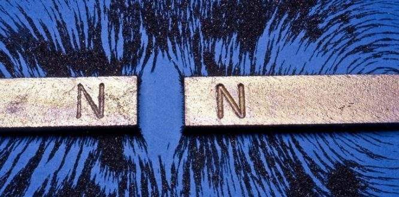
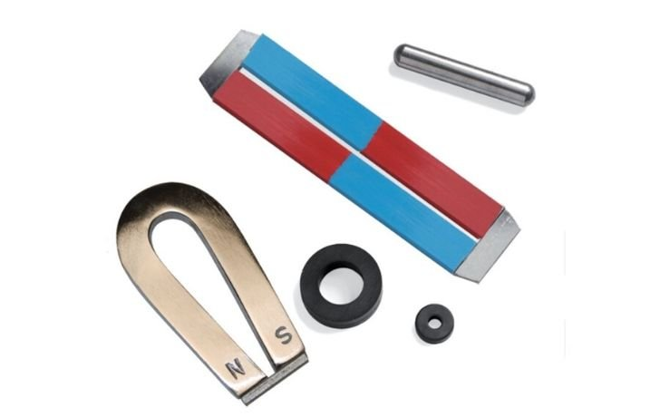
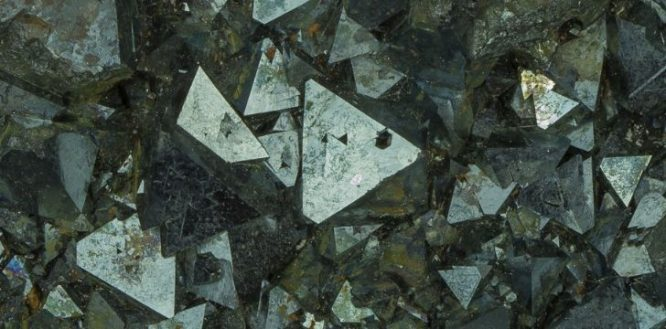
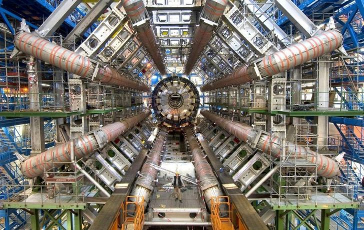

Have you ever wondered how that report card or shopping list stays on the fridge even after being left there for weeks on end?
Only held there by the application of one tiny flip flop magnet bought for you by some aunt who went on vacation last year!
Well, here we’ll look into the wonderful world of magnets, from the natural to the less so natural, and the many uses these objects have.
So, without further ado, let’s begin!
The attraction.
A magnet, or a magnetic material, is an object that has 2 poles, north and south, that attracts other magnetic objects and sticks them together. They do this through attraction.
The poles are attracted to one another, so south gravitates toward north, and north toward south.
But if you try and put the same two together, they will repel one another constantly. But you already knew that right?
There are many types of magnets.
There are numerous types of magnets – they include natural magnetic materials, such as alnico which is an iron alloy, and electromagnets which are created by coiled wire and a current going through it.
Unlike alloys like alnico, the magnetism of electromagnets ceases as soon as the electricity stops flowing, which can be very handy for an array of the modern uses of magnets.
What do we use magnets for?
In the modern world, we use magnets in almost all aspects of our lives, from our mobile phones to our cars.
They can even be used in our hour of need in an array of medical equipment including MRI’s or Magnetic Resonance Imaging.
There is a concern though that the level of magnetism we have around us every day could cause us issues: such as a person with a pacemaker being disrupted or swallowing numerous magnetic items which can attract inside the body and cause issues.
The earliest magnets.
The earliest magnets were of course found naturally just lying around. These were found in rocks and other types of earth known as magnetite or lodestone.
The story goes, the founder discovered the mineral after finding the nails of his shoes stuck to a magnetite rock.
Others says it was the Greeks or the Macedonians, or even our good friend, Pliny the Elder. One thing is for certain though – the first magnets were simply lying around for millennia before our discovery.
What else can you tell me about magnets?
The biggest magnet in the world there is reference to, is actually found in Switzerland in the scientific wonder we all know as the Large Hadron Collider.
The Hadron Collider has a reasonably weak strength of 40000 Gauss, which, o put it into perspective, is 400 times the strength of an average fridge magnet.
This contraption is used to investigate subatomic particles and part of the hunt for the so-called, “god particle,” but this is a topic for another day.
One of the strongest magnets in the world, is of course smaller than the Large Hadron Collider. This is often the case with strong magnets.
One is actually found in Florida State University. It cost an insanely large sum of $2.5 million but comes in at a staggering 25 Tesla.
To put that in perspective, 1 Tesla = 10000 gauss, so this means it comes in at around 2,500 times stronger than a fridge magnet, or 25 times stronger than a magnet used in a scrapyard.
Another interesting fact is that Scandinavia actually has the largest amount of magnetic material in the world.
If you place a wooden plank in water with a magnet attached and allow it float, the magnet will point its northern pole to Earth’s North Pole.
So, there we have it, magnets, something we use every day of our lives and have benefited us in more ways that we could ever imagine. One thing is for sure though – there’s no escaping the magnet.
Even the world is one big magnet if you think of it – it’s polarized with a magnetic north and south pole. Indeed, the very same ones the penguins and Santa live on!